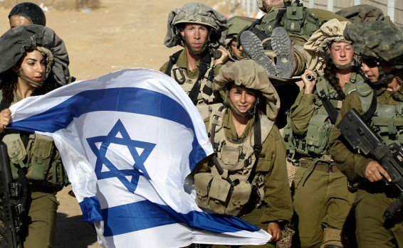
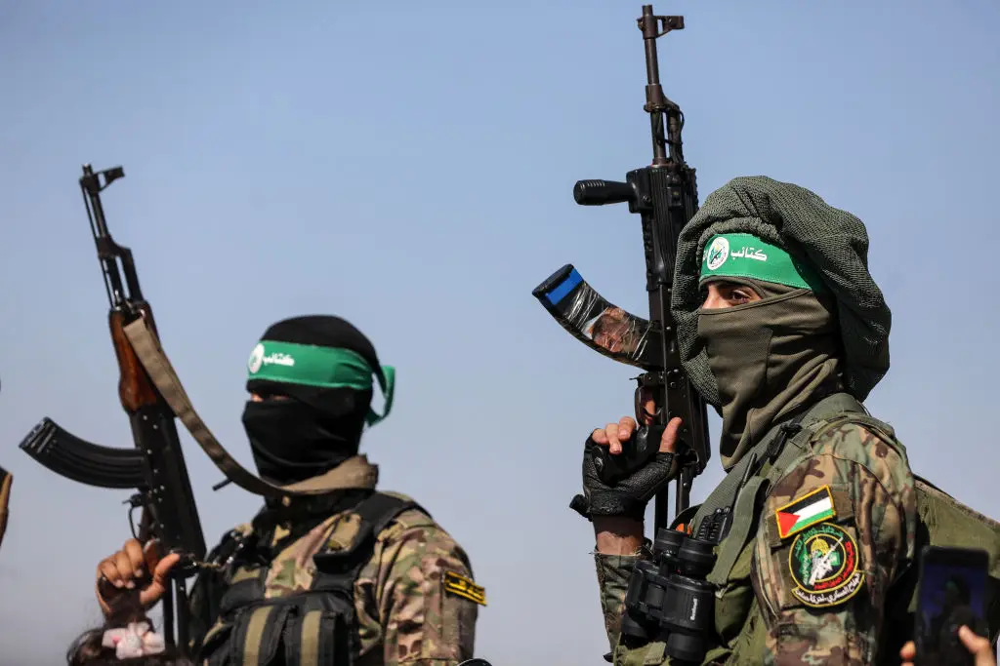

A Complexa História do Conflito Israel-Palestina
O conflito entre Israel e Palestina é uma das disputas mais intrincadas e duradouras da história contemporânea. Suas raízes estão profundamente entrelaçadas em séculos de rivalidades territoriais, identidades nacionais e a luta por autodeterminação
 |
Período Pré-Século XXA presença judaica na Palestina remonta a milênios, mas no final do século XIX, a região era predominantemente habitada por árabes palestinos. Com o surgimento do nacionalismo árabe e do sionismo, as tensões começaram a se intensificar. O movimento sionista buscava estabelecer um lar nacional para os judeus na Palestina, aumentando a imigração e gerando descontentamento entre a população árabe local. Mandato Britânico (1920-1948)Após a Primeira Guerra Mundial, a Grã-Bretanha recebeu o Mandato sobre a Palestina da Liga das Nações. Durante esse período, o aumento da imigração judaica, apoiado pela Declaração Balfour de 1917, provocou conflitos entre as comunidades. A proposta de partição da ONU em 1947, que visava dividir a Palestina em estados judeu e árabe, foi aceita pelos líderes judeus, mas rejeitada pelos árabes. Em 14 de maio de 1948, Israel declarou independência, desencadeando a Guerra Árabe-Israelense. Ao final do conflito, Israel havia expandido seu território, enquanto centenas de milhares de palestinos foram deslocados, criando a chamada Nakba, ou "catástrofe". |
Guerras e Ocupação
Nas décadas seguintes, novos conflitos marcaram a história, incluindo a Guerra dos Seis Dias em 1967, na qual Israel capturou a Cisjordânia, Gaza e Jerusalém Oriental. A ocupação dessas áreas se tornou um ponto central de tensão, exacerbada pela construção de assentamentos israelenses em território palestino.
Tentativas de Paz e Intifadas
Na década de 1990, os Acordos de Oslo surgiram como uma esperança de resolução, estabelecendo a Autoridade Palestina e prometendo negociações para um estado palestino. No entanto, questões fundamentais, como o status de Jerusalém e o direito de retorno dos refugiados, permaneceram sem solução.
As Intifadas de 1987 e 2000 marcaram levantes populares contra a ocupação, refletindo o desespero e a frustração da população palestina, muitas vezes resultando em violência.
Situação Atual
Hoje, a situação é ainda mais complicada. Os conflitos em Gaza se intensificaram, e a expansão dos assentamentos israelenses continua a provocar tensões. A divisão entre a Autoridade Palestina na Cisjordânia e o Hamas em Gaza adiciona uma camada extra de complexidade ao já volátil panorama.
Conclusão
O conflito Israel-Palestina é um ciclo contínuo de disputas históricas e traumas que afetam milhões. A ausência de um processo de paz eficaz e a crescente radicalização em ambos os lados dificultam a busca por uma solução duradoura. A comunidade internacional observa com preocupação, enquanto as esperanças de paz parecem cada vez mais distantes.
Principais Atores no Conflito
O conflito entre Israel e Palestina envolve diversos atores, cada um com interesses e perspectivas distintas. Aqui estão os principais:
IsraelIsrael é um estado judeu estabelecido em 1948, após a Declaração de Independência que marcou o fim do mandato britânico na região. Desde então, Israel tem se esforçado para garantir sua segurança e soberania em um contexto geopolítico complexo, marcado por conflitos históricos e tensões com seus vizinhos árabes. O governo israelense é composto por uma variedade de partidos políticos, que vão desde a direita religiosa até a esquerda secular. Essa diversidade partidária reflete diferentes visões sobre a política interna e externa, especialmente no que diz respeito ao conflito israelo-palestino. A segurança nacional é uma prioridade central na agenda do país, levando a ações militares em resposta a ataques, bem como à implementação de políticas que visam fortalecer assentamentos na Cisjordânia. Além das questões de segurança, Israel também enfrenta desafios sociais, como a desigualdade entre diferentes grupos étnicos e religiosos, e a integração de imigrantes de diversas origens. A economia israelense, caracterizada por inovações tecnológicas e um setor de alta tecnologia em crescimento, desempenha um papel crucial na sua resiliência, mas também gera debates sobre a distribuição de recursos. |  |
.png) |
Autoridade PalestinaA Autoridade Palestina (AP) foi estabelecida após os Acordos de Oslo nos anos 90, um marco histórico que visava criar um caminho para a paz e a autoadministração palestina. A AP assume a responsabilidade de governar partes da Cisjordânia, onde procura implementar serviços administrativos, educacionais e de segurança. Atualmente, é liderada pelo partido Fatah, que tem uma longa história na luta pela autodeterminação palestina. A principal meta da AP é a criação de um estado palestino independente, um objetivo que continua a ser um dos principais pilares do discurso político palestino. No entanto, a Autoridade enfrenta desafios significativos, incluindo a ocupação israelense, que limita sua capacidade de governar plenamente e exacerba as tensões entre israelenses e palestinos. Além disso, a divisão interna entre os palestinos—principalmente entre o Fatah, que controla a AP, e o Hamas, que governa a Faixa de Gaza—complica ainda mais a situação. Essa divisão não só enfraquece a posição da AP nas negociações internacionais, mas também gera descontentamento entre a população palestina. A legitimidade da Autoridade Palestina é frequentemente questionada por muitos palestinos, que expressam frustração com a corrupção percebida e a falta de progresso nas negociações de paz com Israel. Essa desilusão se reflete em protestos e um crescente apelo por uma liderança mais eficaz e transparente. Apesar desses desafios, a AP continua a buscar apoio internacional, esperando que a comunidade global contribua para a realização de um estado palestino que coexista pacificamente ao lado de Israel. A luta por reconhecimento e soberania permanece uma questão central para os palestinos, moldando não apenas a política da AP, mas também o futuro da região. |
HamasO Hamas é um grupo islâmico palestino que controla a Faixa de Gaza desde 2007. Fundado em 1987, o Hamas se opõe à existência de Israel e adota uma abordagem militante em sua resistência. O grupo é conhecido por lançar foguetes contra cidades israelenses e, em resposta, Israel realiza operações militares em Gaza. O Hamas se vê como um defensor da causa palestina, promovendo a resistência contra a ocupação israelense. No entanto, suas táticas violentas, que incluem atentados suicidas e ataques indiscriminados, geram controvérsia e divisão entre os palestinos e a comunidade internacional. Além disso, o Hamas é um ator político importante, com uma base de apoio significativa entre os palestinos, especialmente em Gaza, onde implementou serviços sociais e assistência, o que contribui para sua popularidade. A divisão entre o Hamas e a Autoridade Palestina, que controla partes da Cisjordânia e é considerada mais moderada, complica ainda mais o cenário político palestino. As tensões entre o Hamas e Israel frequentemente resultam em ciclos de violência que impactam severamente a população civil de ambos os lados, perpetuando um ciclo de hostilidade e sofrimento. |  |
Comunidade Internacional
A comunidade internacional desempenha um papel crucial no conflito israelo-palestino, com diversos países e organizações envolvidos nas tentativas de mediação e resolução. Os Estados Unidos têm sido um aliado fundamental de Israel, fornecendo ajuda militar e apoio político, o que tem influenciado a dinâmica do conflito. Por outro lado, a União Europeia busca promover um diálogo pacífico e frequentemente expressa sua preocupação com a situação humanitária na região.
Países árabes, como Egito e Jordânia, também desempenham um papel importante, frequentemente atuando como mediadores em esforços de paz e buscando estabilizar a região. A Liga Árabe, por sua vez, tem se esforçado para unir as nações árabes em torno da causa palestina.
A Organização das Nações Unidas (ONU) frequentemente levanta preocupações sobre a situação humanitária e os direitos humanos, emitindo resoluções que condenam a violência e pedem negociações. No entanto, muitas dessas resoluções não resultam em mudanças significativas, em parte devido à falta de consenso entre os membros do Conselho de Segurança. Isso cria um cenário em que as ações da comunidade internacional, embora bem-intencionadas, frequentemente enfrentam desafios substanciais para provocar uma resolução duradoura do conflito.
Movimentos de Direitos Humanos
Movimentos de direitos humanos, como a Amnesty International e a Human Rights Watch, desempenham um papel fundamental na documentação e denúncia de violações de direitos humanos cometidas por ambos os lados do conflito israelo-palestino. Essas organizações têm chamado atenção para a difícil situação dos palestinos sob ocupação, destacando as consequências da violência israelense, incluindo bombardeios, deslocamentos forçados e condições de vida precárias em Gaza.
Além disso, elas também criticam as ações do Hamas, especialmente em relação à segurança dos civis israelenses, denunciando o uso de táticas que colocam em risco a vida de não-combatentes e os ataques indiscriminados com foguetes. O trabalho dessas organizações é essencial para trazer à luz as realidades complexas do conflito e para promover a responsabilização por abusos de direitos humanos, independentemente da origem.
Civis Palestinos e IsraelensesOs civis palestinos e israelenses são os mais afetados pelo prolongado conflito, vivendo sob condições de constante tensão e insegurança. Os palestinos enfrentam uma realidade difícil sob ocupação, com restrições severas de movimento, acessos limitados a recursos básicos e frequentes ataques aéreos que afetam suas vidas diárias e suas comunidades. As condições de vida em Gaza, por exemplo, são severamente comprometidas, com altas taxas de desemprego, escassez de água e energia, e um sistema de saúde sobrecarregado. Por outro lado, os israelenses vivem sob a constante ameaça de ataques com foguetes e atos de terrorismo, que podem ocorrer a qualquer momento, colocando suas vidas em risco. Essa situação gera um clima de medo e desconfiança, fazendo com que muitos israelenses se sintam inseguros em suas próprias cidades. Apesar das adversidades, tanto palestinos quanto israelenses anseiam por paz e segurança. No entanto, suas realidades diárias são marcadas por um profundo sofrimento e desconfiança mútua, que dificultam a construção de um futuro em que ambos possam coexistir em segurança e dignidade. O desejo de uma resolução pacífica é frequentemente eclipsado por ciclos de violência e retaliação, tornando cada vez mais urgente a necessidade de diálogo e entendimento entre as duas partes. |